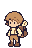
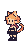

주인공 · 남자 상점 주인
5색 · 키프레임 후보테두리
피부
셔츠
머리·가죽
옷·망토
장식
v6 유지. 짧은 갈색 머리, 크림 셔츠, 보라 모자·망토, 반바지·부츠. 피부와 셔츠는 한 색을 공유한다. 현재 얼굴 그림은 최신 윤곽 수정 후보이며 별도 검토 대상이다.
승인한 v6의 색을 기준으로 캐릭터와 물약의 재질별 색 역할을 정리했습니다.
v6 유지. 짧은 갈색 머리, 크림 셔츠, 보라 모자·망토, 반바지·부츠. 피부와 셔츠는 한 색을 공유한다. 현재 얼굴 그림은 최신 윤곽 수정 후보이며 별도 검토 대상이다.

현재 여행자의 갈색 머리·배낭·반바지와 밝은 셔츠를 유지하는5색이다. 키프레임은 별도 검토 단계이다. 현재 얼굴 그림은 최신 윤곽 수정 후보이며 별도 검토 대상이다.
여마법사 정체성과 긴 보라 로브·모자·보라 머리를 유지한다. 주인공과 옷 길이·색 덩어리 비율로 구분한다. 현재 얼굴 그림은 최신 윤곽 수정 후보이며 별도 검토 대상이다.
승인한 v6의 갈색 머리·초록 의상·22×16 머리 기준·정리된 하의를 유지한다. 현재 얼굴 그림은 최신 윤곽 수정 후보이며 별도 검토 대상이다.

현재 게임 v4의 주황 머리·귀·꼬리와 붉은 목도리를 유지한다. 검은 상의·반바지·장갑·부츠는 테두리색을 공유한다.
36종